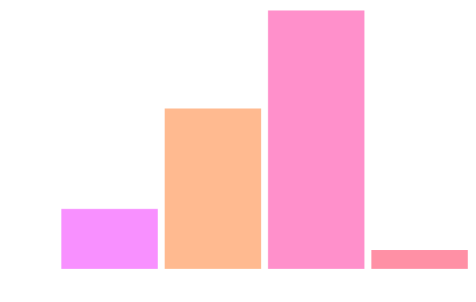

Sleep App (Demo)
Home
Stats
Profile
Settings
Welcome back,
NAME
Record Today's Sleep Data
Overview
Time Slept:
7h 4m
23 minutes
above average
Quality Sleep:
89/100
Recent Statistics
Sleep Types

Timeline

View Previous Stats
Resources
https://www.sleepfoundation.org/how-sleep-works
https://www.health.harvard.edu/newsletter_article/8-secrets-to-a-good-nights-sleep
https://www.healthline.com/nutrition/17-tips-to-sleep-better